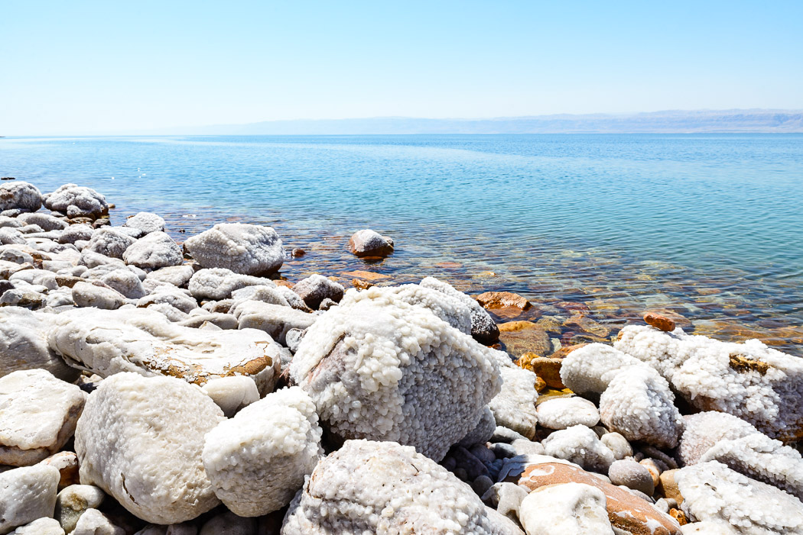

20/09/2016
Totes Meer
Fährt man von Madaba aus etwas nach Westen, erscheint plötzlich das Tote Meer wie eine Sinnestäuschung tief unten am Fuß der Berge. Nach der Fahrt durch sanfte Hügel liegt es viel tiefer als erwartet, und das gegenüberliegende Ufer scheint wie eine Fata Morgana über dem Wasser zu schweben. Das tote Meer und das ebenso tote Ufergebirge verlieren sich zu beiden Richtungen im Dunst. Über steile Serpentinen schrauben wir uns durch ein karges, steiniges Ödland zum Tiefpunkt dieser Reise und überhaupt aller Reisen: Wir befinden uns mehr als 400m unter dem Meeresspiegel. Das ist recht verwirrend, wenn man durch ein 1200 Höhenmeter starke Berglandschaft gefahren ist und am Ufer eines "Meeres" steht.
Den Tag verbringen wir im "Oh Beach", ein Strandclub, der sowohl Zugang zum Meer als auch Annehmlichkeiten wie Süßwasserduschen und einen Pool bietet. Neben dem Eintrittspreis muss man super lauten Arabo-Pop ertragen. Wild Baden ist hier nicht so einfach, weil von der Straße aus überall steile Klippen zum Ufer abfallen. Ein kurzer Geschmackstest bestätigt: extrem salzig. Über einen wackligen Steg kommen wir ins Wasser - oder besser aufs Wasser. Denn man geht tatsächlich kaum unter. Ein anderer Gast hat versucht sich mit Steinen zu beschweren, um unterzugehen - vergeblich. Nicht nur der Auftrieb fühlt sich extrem witzig an, auch scheint das Wasser fast schleimig auf der Haut. Unter einem ungetrübten Himmel und der Sonne, die mit fast 40 Grad herunter brennt, will man den Badespaß nicht enden lassen. Am Ufer kann man sich mit schwarzem Schlamm einreiben lassen. Das soll gut für die Haut sein und sieht witzig aus. Ich sehe darin eine Chance, meinen unvermeidlichen Sonnenbrand noch etwas hinauszuzögern. Wir machen es uns bis zum Nachmittag gemütlich.
Im Sonnenuntergang scheuchen wir das ächzende Auto wieder auf Meeresniveau hoch und weit darüber hinaus. Wenn man bei so einer Hitze durch ein Gebirge fährt, wirkt das Fahren im ersten Gang und die Klimaanlage wie ein Loch im Tank. Auf den öden, ausgewaschenen, rosa und orange leuchtenden Bergrücken treiben Hirten ihre Schafsheerden auf karge Weidegründe. Hier oben brennt kein Licht und die Straßen sind so gut wie leer. Verlässt man das lärmende Auto, taucht man in eine makellose Stille ein. Nur der leichte Wind, der die abendlichen Hitzewellen vorantreibt, und hin und wieder ein Vogelschrei vertreiben die Illusion plötzlich taub geworden zu sein.